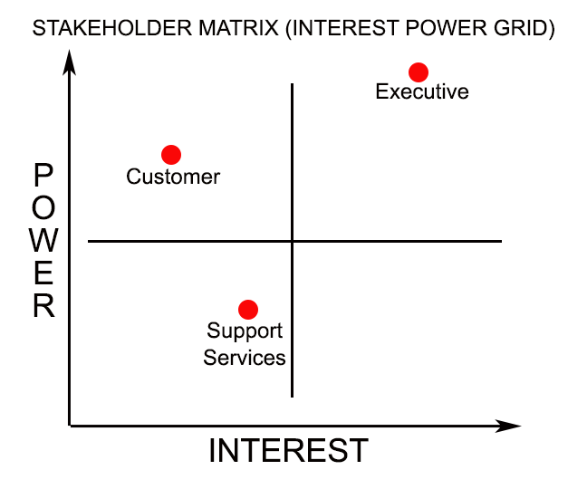
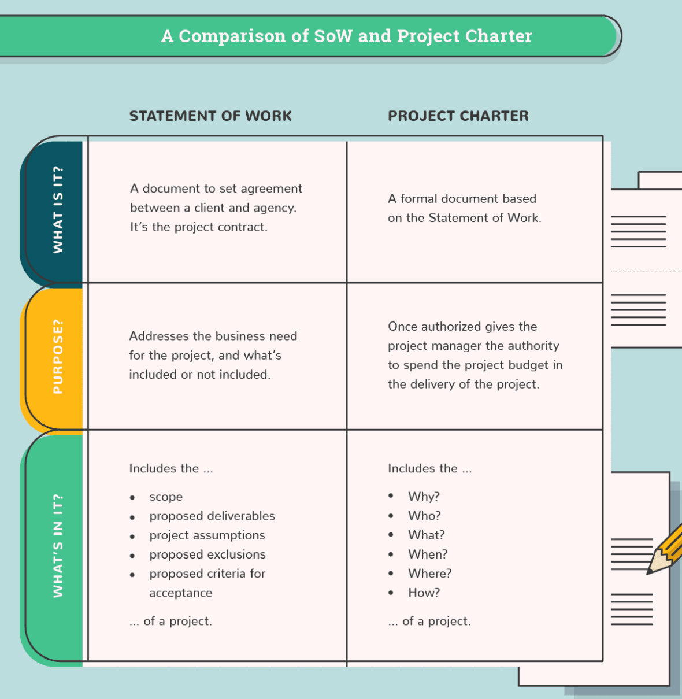

Project Management: Planning

Project Planning
So your company is thinking about a project. One of the first things you need to do is an assessment. You should take into consideration the profitability, time to market, development needs, and commercial viability and compare that to other potential projects. It may be best to start out with an idea generation or brainstorming session. Next you should assess the overall feasibility, risk, and desirability of each project. Consider the degree to which each project fulfills overall company goals and objectives. After all, your primary objective is to help the company fulfill its overall mission, goals, and objectives through implementation of your project.
Establishing goals and expectations
- Make a broad list of all the projects goals and expectations (brainstorming may be good here)
- Remove anything that has no direct bearing on the project
- Debate about those things that might or might not have direct bearing on the project
- Eliminate anything that is really a step in meeting the goals and is not a goal for the end result of the project
- Make sure the goals meet the criteria above
- Assess if it is feasible to accomplish all of the goals in one project. If not, hone the list (perhaps doing "phases" or a step approach, each treated as a separate project and each with very clear boundaries established)
STAKEHOLDER MANAGEMENT
As noted in the project basics segment of this book, stakeholders are any individuals who are impacted by a project. An important part of project planning is to ensure stakeholders have been identified and are a part of the process. Stakeholders are critical in the development of appropriate strategies as well as in execution of any processes throughout the project or as part of the product of the project.
Bear in mind that in some cases there may be conflicting interests from different stakeholder groups. Understanding this and navigating those differing interests are an important part of establishing overall project needs and expectations. As an example, let's say there is a research and development team that has been tasked with creating innovative design solutions for a product that has some design flaw when it comes to comfort and usability. The research and development team wants to have 6 months to develop multiple prototypes and desire a budget of $50,000 to do so. However, the finance department wants to limit expenses on this product since the sales have been low and budgets are tight. Added to that they want to close out any financial transactions within two months since that is the end of the fiscal year. The project manager and the project team working together will need to navigate these conflicting interests and priorities.
The first step in stakeholder management is identifying who the stakeholders are and ensuring their perspectives, expectations, and potential roles are agreed upon. This is referred to as the identify stakeholders process. It should be one of the first things that occur in project planning so that their input is a part of all future discussions as applicable. In many cases, stakeholders are classified as being parts of groups or categories such as suppliers, investors, creditors, employees, current customers, future potential customers, or government agencies.
The next step is to plan an approach for incorporating stakeholder input and support. As a part of this, consideration should be given to identifying positive influences and minimizing negative influences. In some cases a company may decide to use a power grid or stakeholder matrix to help understand interest, influence, and impact.
Below is an example of one such stakeholder matrix which may also be referred to as a power interest grid:

Scope PlanniNg
Scope planning is where you define exactly what you are building (the product), the objectives it will meet, and the quality it will be among other things. This gives the project its focus and evaluation criteria for meeting the customers needs.
In a project context, scope may refer to two things. First, the product scope, which is the features and functions that characterize a product or service. Second, the project scope, which is the work that must be done to deliver a product with the specified features and functions
Scope of planning entails documenting the project work that produces the product of the project. It starts with initial inputs of product description, a project charger come on and initial definitions of constraints as well as assumptions. The product description should reflect agreed-upon customer needs and include product design that meets all necessary requirements.
The outputs of scope planning include a scope statement, and a scope management plan. The scope statement is the basis of agreement between the project team and the project customer and identifies all objectives and deliverables. In most cases a project results in a single product, but that project might have subsidiary components. As an example, an online e-commerce system could include subsidiary components of equipment, software, training, security, and implementation.
See also the section on project management planning.
Requirements
Requirements are often set by objectives. A requirement is basically an objective that must be met.
There are actually several kinds of requirements; the term requirement is awkward because it describes the concept of an objective or goal or necessary characteristic, but at the same time the term also describes a kind of formal documentation, namely the requirements document.
Requirements basically refer to the general set of documents that describe what a project is supposed to accomplish and how the project is supposed to be created and implemented. Such a general set of requirements would include documents spelling out the various requirements for the project -- the "what" -- as well as specifications documents spelling out the rules for creating and developing the project -- the "how".
Some things to consider:
- user requirements
- system requirements
- functional requirements
Specifications
Specifications set the rules.
A project's specifications consist of the body of information that should guide the project developers, engineers, and designers through the work of creating the product/service.
A specification document describes how something is supposed to be done. This document may be very detailed, defining the minutia of the implementation.for example, a specifications document may list out all of the possible error states for a certain form, along with all of the error messages that should be displayed to the user. The specifications may describe the steps of any functional interaction, and the order in which they should be followed by the user. A requirements document, on the other hand, would state that the software must handle error states reasonably and effectively, and provide explicit feedback to the users. The specifications show how to meet this requirement.
Specifications may take several forms. They can be a straightforward listing of functional attributes, they can be diagrams or schematics of functional relationships or flow logic, or they can occupy some middle ground. Specifications can also be in the form of prototypes, mockups, and models.
Some things to consider:
- functional specifications
- design specifications
- technical specifications
STATEMENT OF WORK (sow)
A statement of work is simply a method for ensuring there is an agreed-upon scope of services and outcomes for a project. It can be thought of as the project contract between the client and the project management team. It expresses an integrated set of purposes, goal descriptions, resource requirements, known conflicts, assumptions made, and authorities that define a project and accompany the evolving master project plan during its development throughout the project.
Elements you would expect to find in a statement of work typically include the following:
- Introduction and background.
- The purpose of the project.
- The scope of work to be performed.
- The location of the project.
- Expected deadlines and deliverables.
- Any specific work requirements.
- Acceptance criteria.
Project Charter
Developing a project charter is the process of formally authorizing a new project. Common reasons for initiating a new project include: market demand, business need customer request, technological advance, legal requirement, and social need. A project charter is a document that formally authorizes the project. It is also sometimes called a project definiton or a project statement. It is a statement of the general scope, objectives, and participants in a project. It provides a preliminary delineation of roles and responsibilities, outlines the project's key goals, identifies the main stakeholders, and defines the authority of the project manager. A project charter should contain the essence of the project, provide a shared understanding of the project, an act as a contract between the project sponsor, key stakeholders and the project team. It should include information about business need and product description. The purpose of the project charter is to document: reasons for undertaking the project, objectives and constraints of the project, directions concerning the solution, identities of the main stakeholders, in-scope and out-of-scope items, overarching risks, target project benefits, and high level budget. The project charter is usually a short document that refers to more detailed documents. It is usually issued by a manager external to the project, and at a level appropriate to the needs of the project. It provides the project manager with the authority to apply organizational resources to project activities.
View this sample project charter template from New York University
Also, view this useful diagram that expresses the difference between statement of work and project charter:

(Haworth, 2018)
Define project requirements
Project requirements analysis is the process of determining user expectations for a new or modified product, service, or other outcome. Frequent communication with users determines these expectations and is critical to the success of any project. They include: functional, not function related, technical (hardware, software, etc.), and business requirements.
As you establish requirements, you may want to track information such as this:
- Requirement name
- Requirement type
- Description
- Source
- Criterion needed to fit requirement
- Likely impact on satisfaction/dissatisfaction
- Dependencies
- Conflicts
- Materials needed
Clearly understanding and documenting requirements will reduce process costs, increase quality, reduce number of errors, reduce process throughput times, reduce training time and expenses. reduce the number of internal support requests, reduce the number of customer complaints, increase forecast accuracy and create better information quality throughout the project.
It is helpful to consider the constraints within which you are operating as well. This includes any solution design constraints.
Here are some questions you should ask when determining the requirements:
- Who, precisely, are our stakeholders?
- What are stakeholder requirements?
- Are there circumstances where these requirements differ based on the stakeholder?
- How will be prioritize our requirements?
- Who will be responsible for requirement management?
Define scope and develop scope statement and scope management plan
The project's scope is often defined in tandem with determining the requirements. Scope is a detailed description of the project and the intended outcome of product, service, or result. It defines the boundaries and acceptance criteria. It is typically captured in a scope management plan that has within it a scope statement and requirements management plan.
There are basically two parts to scope: The extent of what a project will produce (product scope) and the work needed to produce it (project scope) (Larsen & Larsen, 2009).
See the scope management chapter to learn more.
Schedule planning
As Project Management Institute notes, "Plan Schedule Management is the process of establishing the policies, procedures, and documentation for planning, developing, managing, executing, and controlling the project schedule" (2017). Project activities/tasks must also be analyzed so that all interdependencies can be identified. This activity results in a structure called the Work Breakdown Structure (WBS).
See project time and schedule management to learn more.
References
Asten, B. (2019). Write a project charter: how-to guide, examples & template. Retrieved January 23, 2021 from https://thedigitalprojectmanager.com/project-charter/
Grey Campus (n.d.) Stakeholder Management Overview. Retrieved January 1, 2021 from https://www.greycampus.com/opencampus/project-management-professional/stakeholder-management-overview
Haworth, S. (2018). Identify and avoid project scope creep. Digital Project Manager. Retrieved January 23, 2021 from https://thedigitalprojectmanager.com/scope-creep/
Project Management Institute. (2017). A guide to the Project Management Body of Knowledge (PMBOK guide) (6th ed.). Project Management Institute.
Wikipedia (n.d.). Project charter. Retrieved January 23, 2021 from https://en.wikipedia.org/wiki/Project_charter